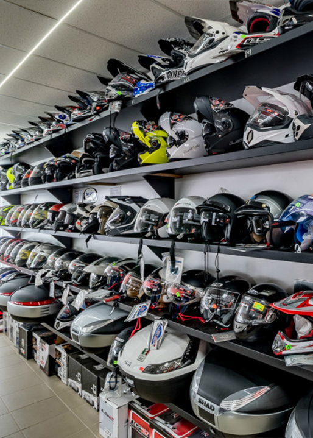

Bezpečnosť na prvom mieste
Ako si správne vybrať motocyklovú prilbu
Prilba je základným prvkom bezpečnosti každého motocyklistu. Jej výber by preto nemal závisieť iba od dizajnu alebo ceny. V článku sa dozviete, aké typy prilieb existujú, ako si vybrať správnu veľkosť a na ktoré vlastnosti sa zamerať pri kúpe. Poradíme vám, ako nájsť prilbu, ktorá vám poskytne potrebnú ochranu a zároveň bude pohodlná aj počas dlhších jázd.
Viac
Prilba je najdôležitejšou súčasťou motocyklovej výbavy. Pri jej výbere by nemala rozhodovať iba cena alebo dizajn, ale predovšetkým bezpečnosť, správna veľkosť a pohodlie. Kvalitná a dobre sediaca prilba môže výrazne ovplyvniť následky prípadnej nehody.
Aký typ prilby si vybrať?
- Integrálna prilba – poskytuje ochranu celej hlavy vrátane brady. Je vhodná na športovú jazdu, cestovanie aj každodenné používanie.
- Výklopná prilba – praktická najmä pre cestovateľov. Umožňuje vyklopenie prednej časti, pričom pri jazde vo vyklopenej polohe musí mať príslušnú homologizáciu.
- Adventure prilba – kombinuje vlastnosti cestnej a terénnej prilby. Ideálna pre jazdcov, ktorí striedajú asfalt a terén.
- Otvorená prilba – ponúka široký výhľad a pocit voľnosti. Obľúbená je najmä pri jazde na skútroch a v meste, neposkytuje však ochranu brady.
Ako vybrať správnu veľkosť?
Správna veľkosť je základom bezpečnosti. Príliš voľná prilba nemusí pri náraze správne držať, zatiaľ čo príliš tesná môže spôsobovať bolesť.
Pri výbere postupujte nasledovne:
- Zmerajte obvod hlavy približne 2 cm nad obočím a ušami.
- Podľa nameranej hodnoty si vyberte orientačnú veľkosť podľa tabuľky výrobcu.
- Prilbu si osobne vyskúšajte, pretože každý výrobca môže mať odlišný tvar.
- Po zapnutí remienka sa prilba nesmie voľne posúvať ani pretáčať.
Na čo si dať pozor pri skúšaní?
Nová prilba by mala pevne priliehať, najmä v oblasti líc, kde sa vypchávky časom mierne prispôsobia. Nesmie však spôsobovať bolestivý tlak na čele, spánkoch ani temene.
Dôležité je, aby prilba pevne držala na hlave a zároveň bola pohodlná aj pri dlhšom nosení.
Čo ešte ovplyvňuje výber?
- Homologizácia: napríklad ECE 22.06.
- Materiál škrupiny: ovplyvňuje hmotnosť, vlastnosti a cenu.
- Hmotnosť: dôležitá najmä pri dlhších cestách.
- Ventilácia: zabezpečuje lepší komfort počas teplých dní.
- Odhlučnenie: oceníte predovšetkým pri cestovaní.
- Plexi a slnečná clona: praktické prvky zvyšujúce pohodlie.
Odporúčanie Motocentra KM
Prilbu odporúčame vyberať osobne. Rovnaký obvod hlavy totiž neznamená rovnaký tvar, a preto môže každému vyhovovať iný model. Radi vám pomôžeme vybrať prilbu, ktorá vám bude správne sedieť a poskytne potrebný komfort aj ochranu.